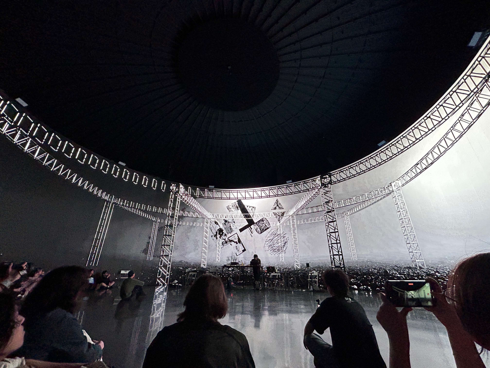

← 返回首页 / 代表作品

作品页
Drop Flow | 滴流系列
空间生成 / 沉浸式图像 / 身体表演 / 感知迁移
Drop Flow 系列围绕空间生成、沉浸式图像、身体表演与观看位置的关系展开，是 VIRTURA 在空间叙事方向的重要项目线。
2023 - 至今
持续形成版本与展览链路。
空间生成
由图像延展至空间与观看结构。
杭州双年展 2025
并进入不同展演与展示节点。
视觉 / 音乐 / 交互协作
由多位成员在不同版本中协作推进。
核心维度
项目的主要内容维度。
项目位置
项目已形成连续的版本与展览链路。
《滴流 Drop Flow》已由早期版本发展至内部展演、公开演出、竞赛节点与展览发布，并持续向空间化与后续数字场景方向延展。
当前页面集中呈现其主要公共信息、图像线索与后续入口。


空间档案
高斯空间入口
该入口保留成员影像、空间计算保存与后续 XR 展示之间的中间状态，为项目提供视频之外的空间化浏览路径。
作用
以空间对象形式继续呈现与归档项目内容。
延展方向
继续接向网页展示、空间视频与后续 XR 入口。